My document of development process
Explore the complete development process of Fritz' Furry Farmer! I thought over these processes for several days after deciding to start development in Phaser 4. I wrote my initial concepts some of which came true t life and other of which had to be changed due to game Engine constraints. Between the concepts, doing research, writing the code, and doing asset generation, easily 150+ hours!
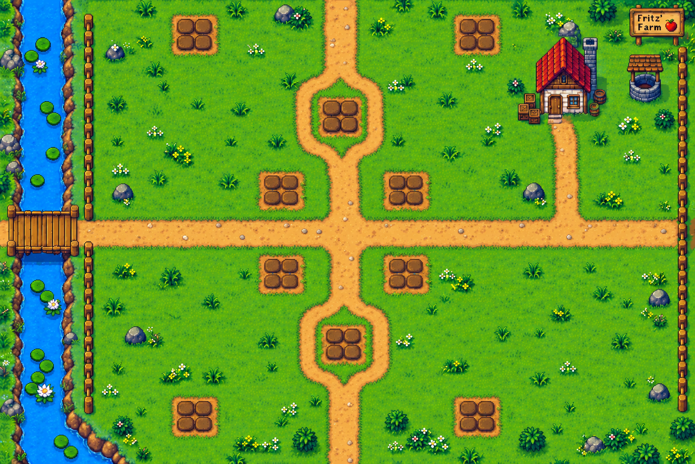
Early design Notes
Creating the Background Concept
When I was young my grandfather was a farmer and when he retired I lovingly nicknamed his backyard Fritzy's Farm, me and my father often helped him maintain this plot. I wanted to include something in the game title and original background that referenced mine and my family's name, and this is what I settled upon.
I originally started out with the generation of the background with copilot and it generated several concept images that I slowly refined until I had most of the background modeled. But at this moment I realized I would need a better editing manager which I found in the pen tool on chatGpt at which point I subscribed to chatGpt Plus to have unlimited query generations and so I stuck with that for the remainder of the project.
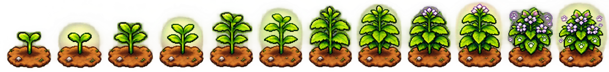
Plant growth animation
Bringing the Farm to Life
Since the setting was a farm, and the main character a farmer, I wanted to have a part of the game being growing the catnip Plant as can be seen to the right. Obviously the other implements are an extension of the horde survival genre with games critically acclaimed like Vampire Survivors,Megabonk, and Brotato. But I wanted to use the farming element as a twist which is why the bullets both deal damage and grow the plant in individual stages.
As you can see in my notes prior to the project(above ^) I wanted the five stages of growth since that was stepwise and not too slow to become annoying and the mechanics involved largely work. I especially like that during the generation process to create this spritesheet properly. I engineered the results until we has 4 slowly blooming frames and then the final glow frame has cat ears and the flowers look like little paw prints.
From Ideas to Pixel Art
A collection of the assets created throughout development. They took anywhere from 2 mins, if no changes needed, to almost an hour, if many revisions required and random outliers occur for each image, sprite, or sound effect. However, even given these time investments the results were largely better than I could produce any amount of time at my artistic skill level and lack of creativity. It also helped choose many of the elements of this website: colors, blocking, font and layout.
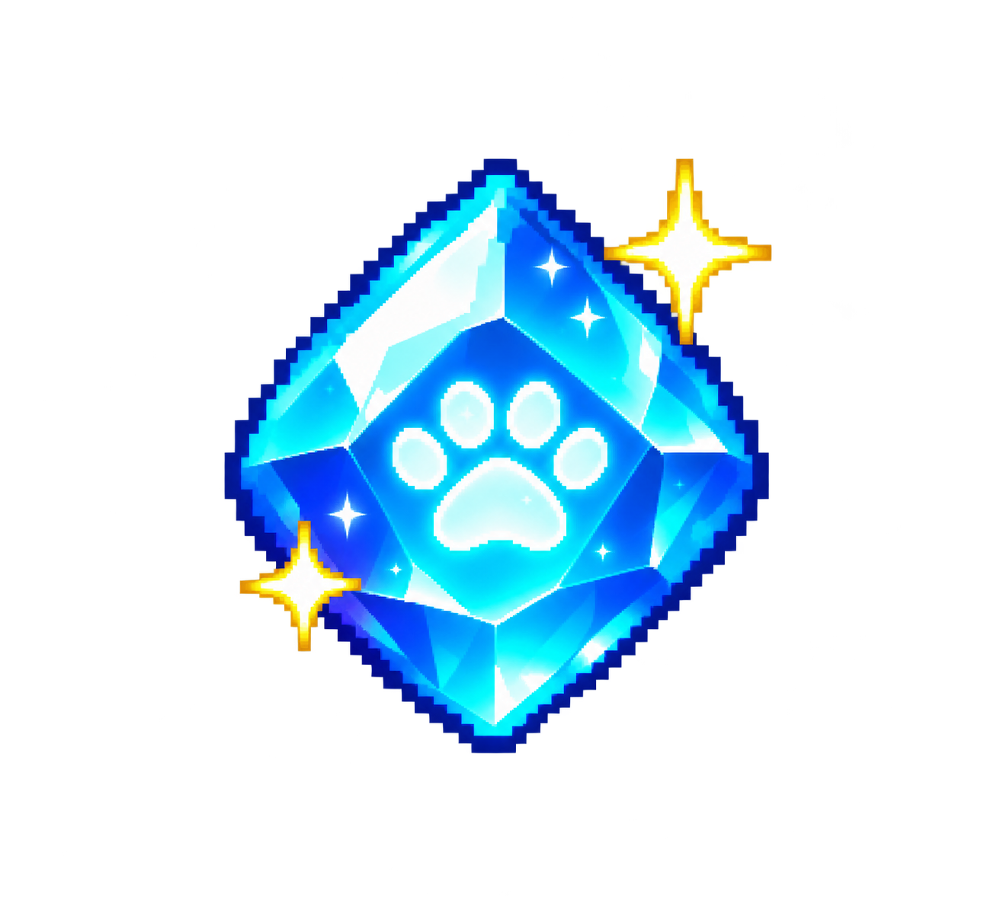
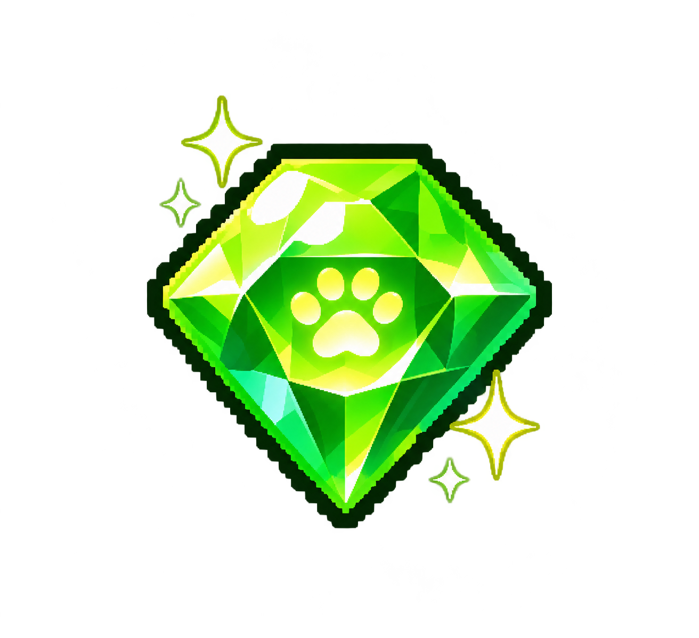
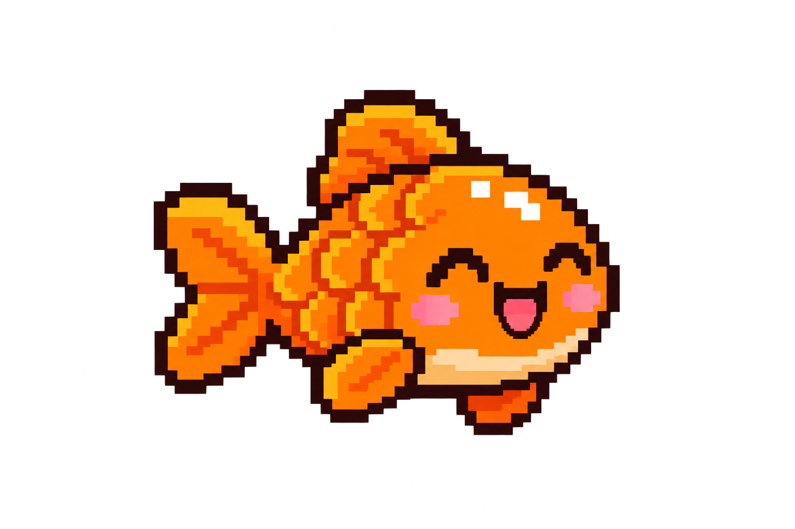
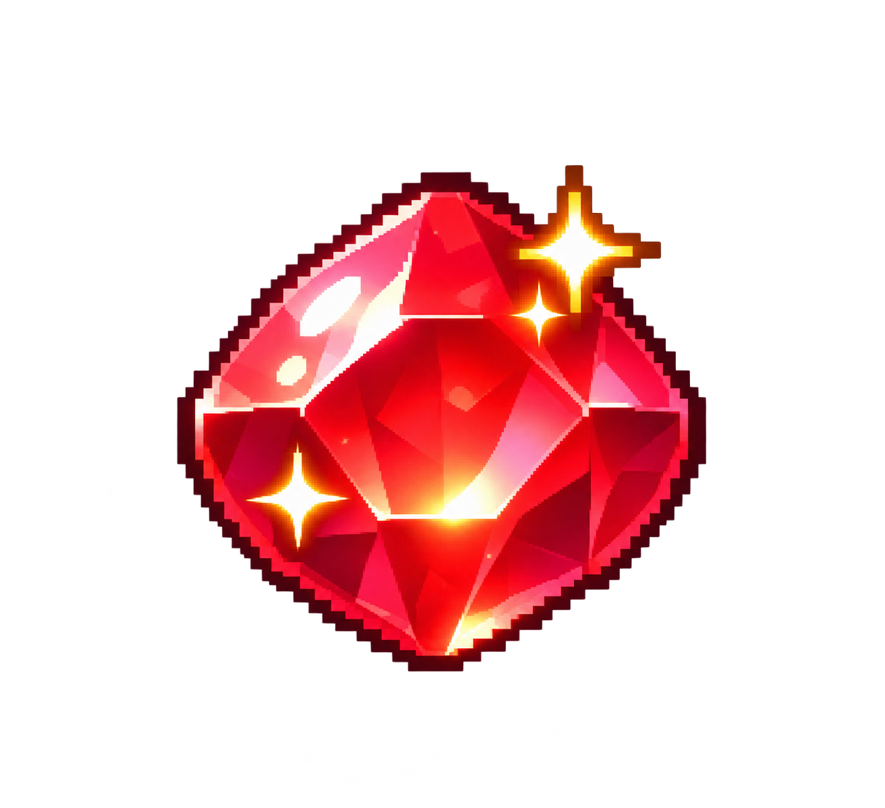
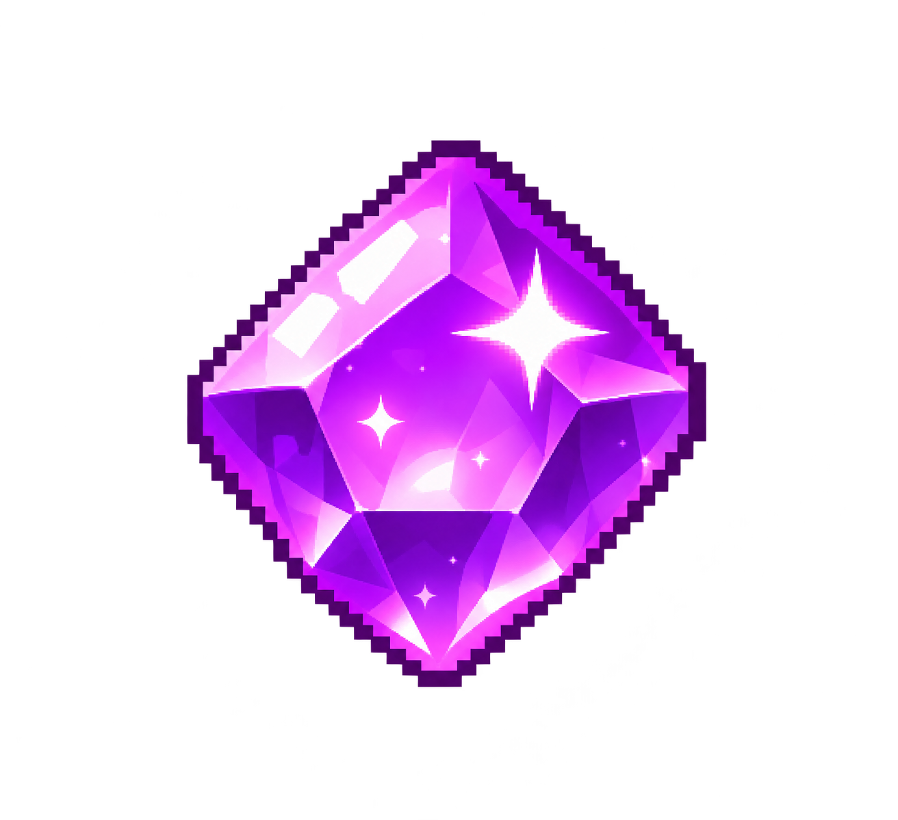
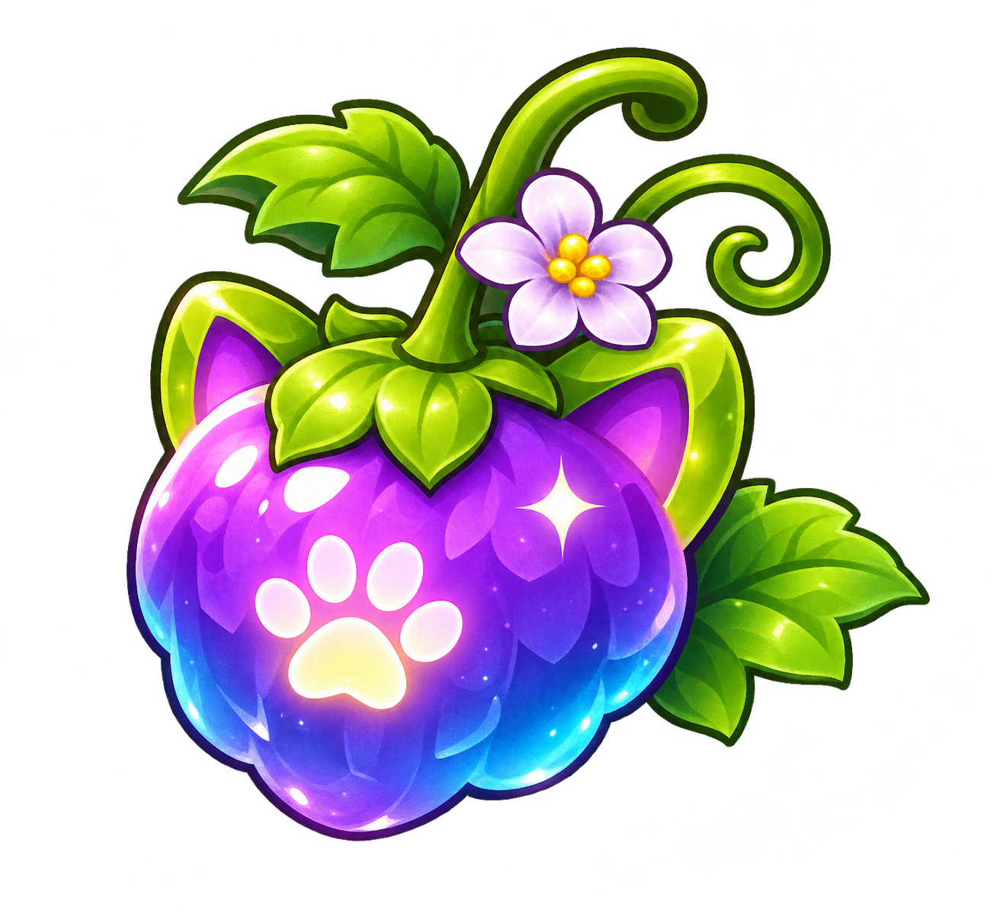
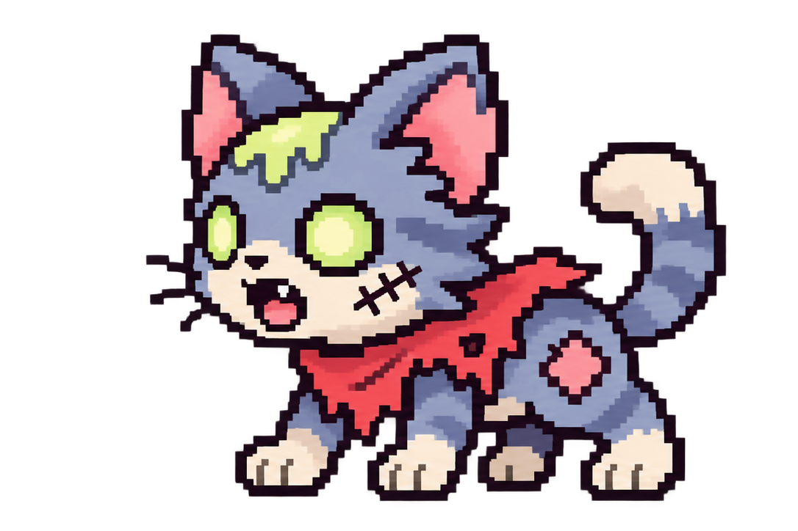
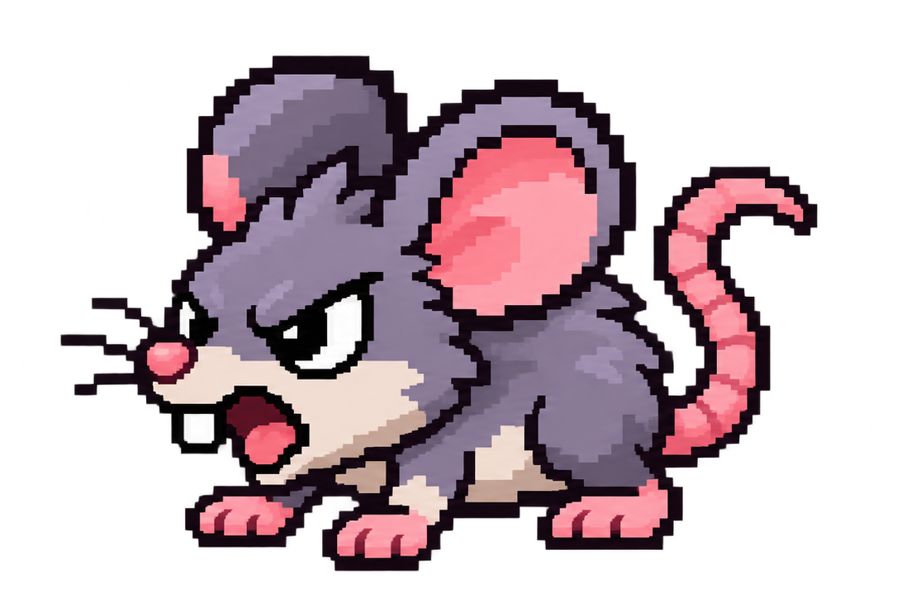
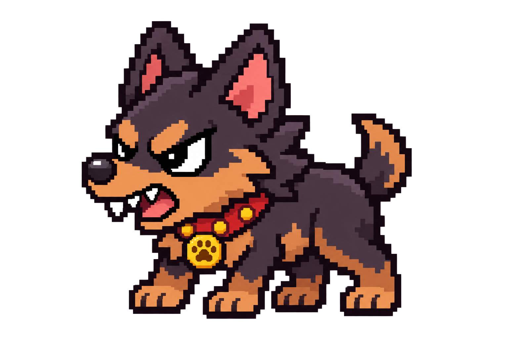
Programming the Game
Learned a lot of basic uses of Phaser 4 from tutorials namely from https://www.youtube.com/@swestover and https://www.youtube.com/@ourcadetv, and using the API documentation from Phaser themselves available at https://docs.phaser.io/api-documentation/api-documentation, and for the connection to database and separate html files used many different resources. Each bit of learning came with some testing, eventually I got to the point where it was the best I could do.
The crux of the Game, Fritz' Furry Farmer, that I made, is trying to get the highest possible score you can and survive the entire 2 mins and 30 secs and a small overtime to pick up the remaining gems to add to your score. You take damage based on the type of enemy they are: zombie cats are slower but deal 2 damage and have lower drop odds for high score gems and healing items(fish), mice are faster but but have less health and deal less damage to balance it out, the dog enemy does the most damage 3 hearts, has the median speed, and is more likely to drop higher scoring gems. These are also repeated in the much larger versions that I have denoted as bosses, appearing every roughly 30 seconds they have way more health and size but speed and damage proportional to their regular counterparts. The most interesting part to the game are the regular level up(from collecting gems) and special levelups from harvesting the Catnip fruit, which gives you much better abilities and evolves your character. The hardest part to implement but also the most basic element of most Horde Survivors is the ability to fire your projectiles automatically, currently and in the most difficult way possible I made it constantly cycle to look for the nearest enemy or plant(with a slight buffer) and aim the next Projectile at it. I wanted it to work like this so that it would be as simple and user friendly as possible. I became aware of a much easier method using collisions and creating a maximum shot radius but I decided to keep my original method as it would be simpler for anyone unfamiliar with this type of game. The other collision methods that I do use are ones inherently able by being added to the arcade physics pre built in phaser 4. With this I could tell when bullets hit enemies or plants and had to make sure it only counted each instance of collsion with an object once. I made each item pickup a collsion resolution and then would essentially deactivate the pickup. Most of the logic in the game was mapped similarly and had relevant function calls and variable values saved. The culmination of these is the game as you see can see it in the game tab! Among all the html, and js files I have easily more than 2500 lines of written code!
What I Learned and where it is going
Altogether, though stressful because this project is for an assignment, I genuinely enjoyed tinkering with the code. Getting to see a fully formed game come to fruition from what was originally just a small idea is really cool. It gives me even more admiration for game and other software developers, seeing as they spend even more time and effort polishing their projects to have people use/enjoy their work. I set out in this project to make a game demo and learn some new coding skills and gain experience using genAI as that is becoming an increasingly bigger part of both game development and daily life. I have many good things to say about it as I alluded to before, it makes much higher quality output than I could have imagined or created myself given an infinite amount of time, it takes a lot of attempts to get something exctly as you envision it, but especially with the editing tools provided within chatGPT I gradually was able to lower the time needed for each individual task and it would even prompt options that I had not yet considered such as improvisations in some of the gem design and what the particulars of each character evolution included. I believe I have met the goals I set for myself for this project. What will this lead to for me in the future, I think potentially a hobby of making games, at the very least a brand new tool in my toolbag, knowing how to query genAI to help me in my future in technology, hopefully an IT or software development position. At the end of it all,
Thank you so much for playing my game! - Mark Fritz